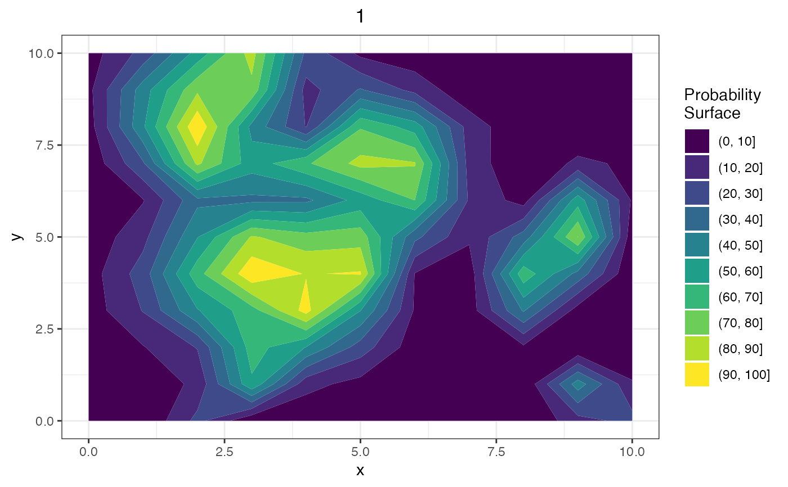

Plot Simulation
PlotSimulation.RdPlot different aspects of a Spatial Simulation Object
Arguments
- sim_object
A Spatial Simulation Object
- nrow
Number of rows of plots (only applicable when more than one plot is made)
- ncol
Number of columns of plots (only applicable when more than one plot is made)
- which
Index of the elements of the Spatial Simulation Object to be plotted
- what
What to plot ("tissue heatmap", "hole heatmap", or "whole core")
Details
The PlotSimulation function is used to plot different aspects of a Spatial Simulation Object.
The function takes a sim_object as its first argument, which should be an object of class
"Spatial Simulation Object". The function can then be used to plot different aspects of the
simulation, such as heatmaps of the tissue or holes, or a plot of the whole core with assigned cells colored by type.
When what is set to "tissue heatmap" or "hole heatmap", the function will plot heatmaps of
the specified tissue or hole. When what is set to "whole core", the function will plot the
entire core with assigned cells colored by type. Only a single element of the sim_object can
be plotted when what is set to "whole core".
When more than one plot is made, nrow and ncol can be used to specify the number of rows
and columns of the plot grid, respectively.
Examples
# create a Spatial Simulation Object
sim_object <- CreateSimulationObject()
#> No `window` specified - defaulting to x (0, 10); y (0, 10)
sim_object = GenerateSpatialProcess(sim_object)
sim_object = GenerateTissue(sim_object, density_heatmap = TRUE, step_size = 1, cores = 1)
#> Computing density heatmap
#>
| | 0%, ETA NA
|==================== | 33%, ETA 00:00
|======================================= | 67%, ETA 00:00
|=======================================================| 100%, Elapsed 00:00
#> Computing tissue probability
#>
| | 0%, ETA NA
|==================== | 33%, ETA 00:03
|======================================= | 67%, ETA 00:01
|=======================================================| 100%, Elapsed 00:02
# plot a heatmap of tissue 1
PlotSimulation(sim_object, which = 1, what = "tissue heatmap")
